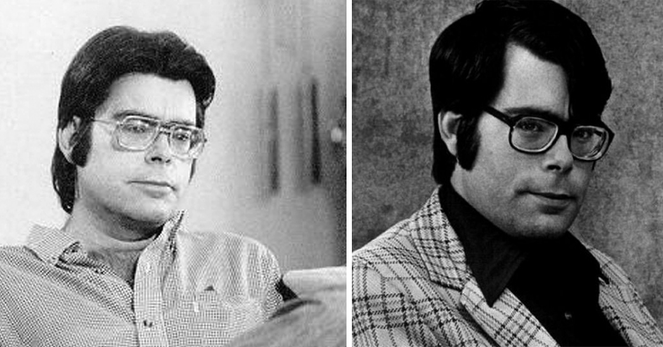
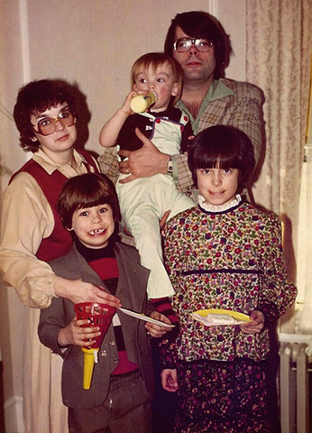

Стивен Эдвин Кинг (Stephen Edwin King, 21 сентября 1947) – американский писатель и фантаст, книги которого известны во всём мире и ежегодно продаются миллиардами копий. За свои невероятные истории и ужасные факты в произведениях заслуженно получил титул «Короля ужасов».
Детство и юность
Стивен Кинг родился 21 сентября в городе Портленд, в семье капитана торгового флота. До момента рождения Стивена семья уже воспитывала приемного мальчика по имени Дэвид. Дело в том, что матери Стивена в своё время поставили страшный диагноз о том, что она не может иметь детей. А поскольку пара была еще достаточно молодой, они решили усыновить мальчика, после чего выяснилось, что врачи ошиблись в диагнозе, и Рут, мать Стивена, успешно родила здорового и крепкого мальчика.
Изначально фамилией Стивена должна была стать польская «Спенски», поскольку его родители некоторое время проживали на территории Польши. Однако после их переезда в штат Мэн отец решил сменить фамилию на «более американскую», в результате чего и стал Кингом.
Когда Стивену Кингу было два года, его отец вышел из дома и пропал. Долгое время семья жила с одной-единственной целью – узнать, где сейчас находится отец семейства. Изначально полицейские склонялись к версии о самоубийстве или несчастном случае, однако ни морги, ни больницы не подтверждали информацию. В итоге, целых два года мать и двое детей оставались в неведении. А затем они случайно узнали правду: оказывается, в тот самый вечер отец семейства просто решил уйти из семьи к своей бразильской любовнице, которая, к слову, жила неподалеку. Там он прожил счастливую жизнь и умер в 1980 году. Об этой неприятной ситуации Стивен и Дэвид узнали уже будучи подростками, тем не менее, мать была в курсе всей ситуации практически с самого начала.
Творческий путь
Первый рассказ мальчик написал в семь лет. Это было повествование о капитане Кейси, а текст списан из комиксов. Мама похвалила сына и сказала, что он способен написать лучше. Стив сочинил историю «Мастер Хитрый Кролик» и еще четыре рассказа.
В 12 лет Стивен вместе с братом Дэвидом издавали собственную газету «Листок Дэйва». Во время учебы будущий «Король ужасов» работал для школьного издания, но мало. Его писательская активность была направлена на собственный листок «Рвотное средство», для которого он сочинял смешные истории про учителей. За это с него потребовали официальное извинение и оставили после уроков. Когда юный хулиган окончил школу, преподаватели вздохнули спокойно.
В 1959 году Стивен и Дэвид решают заняться публицистикой и открывают собственную городскую газету, где печатаются местные новости, небольшие рассказы, повести, а также рецензии на многие телевизионные шоу и кинофильмы. Спустя год к редакции присоединяется друг Стивена, Крис Чесли, вместе с которым они публикуют рассказы «Люди, места и вещи» и «Звездные захватчики».
К 1977 году о Стивене Кинге знают многие, в особенности студенты старших курсов университетов, которые читают его книги и хотят даже экранизировать некоторые из его наиболее интересных произведений. В частности, большинство юных режиссеров просят Кинга дать согласие на экранизацию рассказа«Ночная смена».Чтобы не обижать фанатов, Стивен поступает весьма оригинальным образом: он заключает договор с каждым молодым режиссером о том, что без его согласия экранизация ни в коем случае не появится на телеэкранах. А в качестве страховки он просит доллар, называя подобный договор «долларовым».
В конце 1970 года Стивену Кингу приходит в голову, что его успех скорее всего был просто стечением обстоятельств и обычным везением. Для того чтобы проверить гипотезу, он берет псевдоним Ричард Бахман и публикует под ним рассказы«Худеющий», «Долгая прогулка», «Ярость», «Дорожные работы» и «Бегущий человек». После выхода в свет работ «неизвестного автора» они приобретают невероятную популярность. Этот факт стал для Кинга доказательством того, что его успех заслуженный. Однако то, что автор новых произведений является всё тем же Кингом, раскрывается достаточно быстро, благодаря Стиву Брауну, продавцу в одном из книжных магазинов. Парень подмечает один и тот же писательский стиль произведений Кинга и Бахмана, после чего заявляет широкой общественности о своей догадке.
Автомобильная авария
19 июня 1999 года во время прогулки Стивена Кинга сбивает минивэн. Пролетев несколько метров, автор сначала скатывается с дороги, а затем падает в кювет, где его, находящегося всё еще в сознании, и находит местная полиция. Несмотря на сильнейшую боль, Стивен даёт номера близких, после чего его увозят сначала в больницу Северного Камберленда, а спустя несколько часов – в Центральный Медицинский Центр Мэна.
У Кинга обнаруживают сильнейшую деформацию правого легкого, а его нога оказывается практически полностью раздробленной, из-за чего врачи предлагают сделать ампутацию. Вплоть до 9 июля писателя поддерживают на аппарате искусственного обеспечения дыхания, после чего его состояние начинает медленно стабилизироваться. С помощью физиотерапии и пяти операций ногу сохраняют и вылечивают Кинга настолько, что он снова начинает писать.
В это же время его адвокат пытается предотвратить торги на eBay по поводу того самого минивэна, который сбил писателя. Но его выкупают раньше, о чём впоследствии сильно сожалеет сам Стивен Кинг. Но еще больше его огорчит и одновременно обрадует весть о том, что спустя месяц минивэн сдадут на металлолом.
К 2001 году Стивен Кинг полностью восстанавливается после аварии. В свет выходят такие произведения, как «Ловец снов», «История Лизи», «Дьюма-Ки», «После заката», «Сияние», «Страна радости», «Мистер Мерседес», «Возрождение», «Легкий гром» и другие. Они приобретают мировую популярность, а за автором навсегда закрепляется заслуженный и почетный титул «Короля ужасов».
Личная жизнь
В 1966 году, после поступления в Университет штата Мэн, Стивен Кинг знакомится со своей будущей и единственной женой Табитой Спрус. Их историю трудно назвать романтичной или счастливой. Она работала учительницей, он постоянно писал и находился в состоянии «творческого транса». Тем не менее, в 1971 году пара официально узаконивает свои отношения. К слову, именно Табите Кинг он обязан издательством романа «Кэрри». В один из дней жена нашла черновик книги в мусорной корзине, поскольку сам Кинг нашел идею неинтересной и скучной. Но Спрус настояла на том, чтобы писатель закончил произведение, и издала его, после чего роман разошелся миллионом копий по всему миру.
Со своей супругой Табитой Стивен Кинг живет счастливо. У них крепкая семья, трое детей и четверо внуков. Первым ребенком в семье писателя стала дочь Наоми. Она появилась на свет в 1970 г. Потом родились сыновья Джозеф (1972) и Оуэн (1977).
Сыновья и жена Кинга пробовали себя в литературной деятельности. Табите не удалось стать популярным автором, а Джозеф и Оуэн пишут довольно успешно. Дочь Наоми служит настоятельницей в церкви, и известна своими отношениями с учительницей теологии Тандекой. Они сочетались браком в 2000-м году.
Факты из жизни
- Всего из-под пера Кинга вышло полноценных 55 романов и около 200 рассказов.
- Помимо художественной литературы, он написал 5 научно-популярных трудов.
- К моменту 70-летия Стивена Кинга было успешно распродано более 350 миллионов экземпляров его книг. Они были переведены на множество языков.
- Его произведения экранизировались более 100 раз.
- Действие многих произведений Кинга проходит в американском штате Мэн, который он сам называет «самым таинственным штатом в Америке».
- Стивен Кинг — самый богатый писатель в истории мировой литературы.